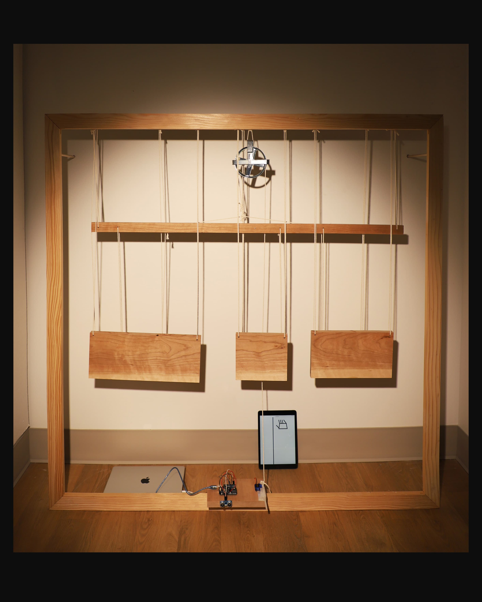

This work begins from a quiet, ordered state: wooden blocks hang in parallel, aligned and seemingly stable. When someone passes by or approaches the installation—often without realizing it—the sensor registers their presence and activates the system.
The work foregrounds moments of friction that occur without conscious intention. A body enters the field of detection, and something shifts. The viewer does not choose to act, yet their presence becomes a trigger. This involuntary activation mirrors how discomfort often arises in social encounters: disagreement, difference, or misalignment can surface before we are prepared to acknowledge it. The tension precedes understanding.
As the mechanism responds, the wooden elements tilt and strain, echoing the compressed gesture of a frown—an embodied signal of unease. The system does not fully resolve into harmony nor collapse into chaos; it remains suspended in between.
Alongside the physical installation, a p5.js-based digital sketch runs continuously on nearby devices. The code operates as an ambient indicator—visualizing the ongoing, background systems that quietly surround and influence us.
The installation invites viewers to consider how often we trigger reactions in others simply by moving through shared space. Acceptance, here, is not about control or resolution, but about staying with the awareness that tension can be produced unintentionally, and that coexistence requires learning to inhabit these small, everyday disruptions.